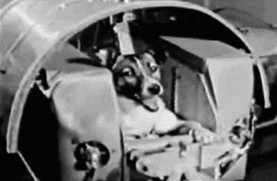
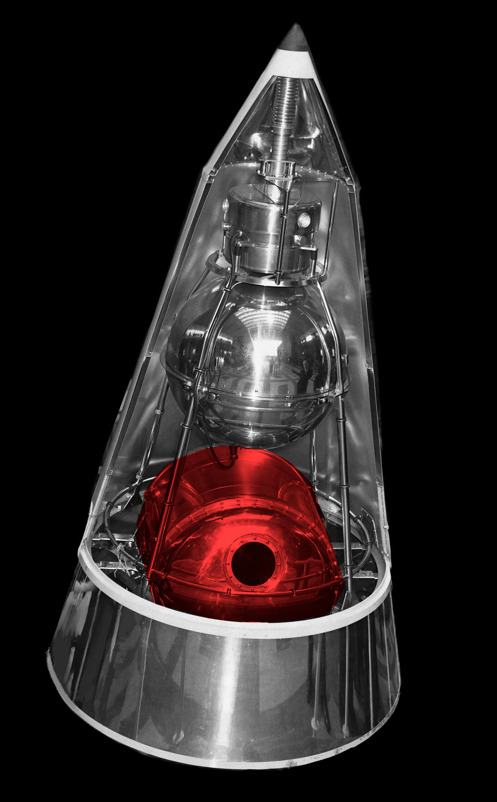

Sputnik-1
Спутник 1
Fue lanzado el 4 de octubre de 1957 (1 año después, EE.UU. creará la NASA). Se convirtió en el primer objeto de fabricación humana en órbita, una esfera de aluminio de 58 cm de diámetro que tenía una masa aproximada de 83 kg.
Diez misiones espaciales de la URSS son las que componen este programa iniciado en la década de 1950. La primera de estas misiones puso en órbita en octubre de 1957 al Sputnik, el primer satélite artificial de la historia, y la segunda, un mes más tarde, llevó al espacio a la perrita Laika, el primer ser vivo en llegar a tales alturas, para morir carbonizada. Las siguientes misiones sirvieron de base al programa Vostok.
Este proyecto soviético fue el detonante de la carrera espacial que se desató en 1955 durante la guerra fría y por los distintos objetivos que tenía cada una de las misiones. Mandar el primer satélite artificial a orbitar la Tierra dejó un gran legado en el mundo de la aeronáutica y un gran peso en el nombre Sputnik que significa "satélite" o "compañero de viaje".
| Fecha | Programa Satélite | Éxito del despegue | Estado final |
|---|---|---|---|
| octubre de 1957 | Sputnik 1 | Exitoso | Desintegrado |
| noviembre de 1957 | Sputnik 2 | Exitoso | Desintegrado |
| febrero de 1958 | Sputnik 3 | Fallido | Desintegrado |
| mayo de 1960 | Sputnik 4 | Exitoso | Desintegrado |
| agosto de 1960 | Sputnik 5 | Exitoso | Recuperado |
| diciembre de 1960 | Sputnik 6 | Fallido | No recuperado |
| febrero de 1961 | Sputnik 7 | Fallido | No recuperado |
Fue una prueba de vuelo del prototipo de nave que se usaría para la primera misión del programa Vostok, el cual llevaba a bordo un maniquí humanoide al igual que contenía instrumentos científicos, un sistema de televisión y voces pregrabadas para monitorear la comunicación. Su finalidad era testear el funcionamiento del sistema de soporte vital y la resistencia al vuelo.
Sputnik-5 fue un satélite artificial lanzado en 1960, fue la segunda prueba del programa Vostok. Este llevaba a bordo una increíble cantidad de diversos seres vivos. En él iban los perros Belka y Strelka, 40 ratones, 2 ratas y una diversidad de plantas. La nave regresó a la Tierra al día siguiente y todos los animales a bordo fueron recuperados con vida.
Los soviéticos fueron los primeros en poner un satélite en órbita. El 4 de octubre de 1957 despegó desde Baikonur el cohete R-7 con el satélite Sputnik 1 en su punta. El satélite de la misión se incineró durante su reentrada en la atmósfera terrestre al término de su misión el 4 de enero de 1958, después de 1.440 órbitas alrededor del planeta.
Así, durante 21 días el latido del Sputnik 1 fue el primer sonido artificial en inundar el espacio exterior.
La nave era de un tamaño muy similar al de una pelota de playa. Una esfera de aluminio de 58 centímetros de diámetro y 83 kilos de peso, y le bastaban 98 minutos para realizar una órbita elíptica alrededor de la Tierra.
Se desarrolló una sección especial de transferencia para conectar el satélite a su cohete R-7. El sistema de separación se diseñó para lanzar primero la cubierta de la carga útil que protegía el satélite durante el ascenso a través de la atmósfera, y después el propio satélite.
El diseño del primer satélite Sputnik es relativamente simple ya que fue construido en menos de un mes al encontrarse los rusos en una carrera contra el tiempo para poder lanzarlo al espacio.
Llevó por primera vez al espacio un animal, Laika, un can callejero que también se convirtió en el primer animal en morir en una órbita. No existía posibilidad de que la nave retornara a la Tierra y se planeó matar a Laika después de 10 días en órbita. Sin embargo, no fue necesario. En 2002 se reveló que la perra había muerto a pocas horas por el estrés y sobrecalentamiento puesto que se alcanzaron los 40°c por un desprendimiento de unas placas termoaislantes del satélite.
Las dimensiones de la cápsula del Sputnik 2 hacían que los perros tuvieran que adaptarse a un espacio muy reducido y pasar por un entrenamiento intensivo en máquinas centrifugadoras que simulaban las condiciones de despegue del satélite.
Fue gracias a esta misión que a lo largo del programa se siguieron mandando animales de prueba para ver qué tan viable era ir al espacio. Mandaron más de 50 seres vivos en misiones.
Que la Unión Soviética no solo lograra tocar el espacio, sino que al mismo tiempo contraatacar con armas nucleares, provocó el llamado efecto Sputnik: Estados Unidos sintió que se quedaba atrás con las tecnologías que la URSS colocaba sobre la mesa, por lo cual Dwight Eisenhower, quien en aquel momento era su presidente, decidió acelerar los programas espaciales y armamentísticos del país dado paso a la creación de la NASA.
El efecto Sputnik no solo provocó tensiones tras desencadenar la carrera espacial, sino que a su vez aumentó la impresión de una amenaza por parte de EE.UU. quienes al final demostraron la capacidad de igualar o incluso superar el potencial tecnológico de la Unión Soviética.